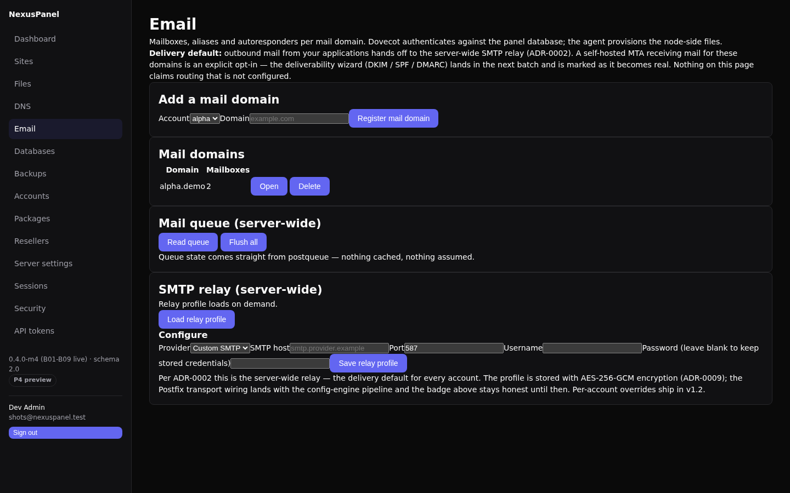

Mailboxes, aliases and autoresponders per mail domain. The division of labor is fixed by ADR-0013: the agent owns everything that is a file on the node (Postfix maps, maildirs, Sieve scripts), the panel owns the registry and all credentials — Dovecot authenticates against the panel database through a read-only SQL userdb, so mailbox passwords never touch the agent.

Delivery default constitutional
Outbound mail from your applications hands off to the server-wide SMTP relay (ADR-0002) — that is the delivery default for every account. A self-hosted MTA receiving mail for your domains is an explicit opt-in. The email screen states this on every visit; nothing on it claims routing that is not configured.
Mail domains live in the panel
Open Email, pick a hosting account, and register a mail
domain. The agent adds it to the managed Postfix virtual-domain map and
rebuilds the map; if the node cannot rebuild the maps (no postmap),
the response says so — routing stays down until it is, and the panel
logs it loudly. Deleting a domain is refused while mailboxes or aliases
exist: the panel never orphans node-side state.
Mailboxes live in the panel
- Quotas per mailbox (MB), capped by the account's
package (
mailbox_quota_mb); the number of mailboxes is capped bymailbox_count. Both are enforced before any node call. - Passwords are hashed in the control plane with
Dovecot's native
{SSHA512}scheme and verified by Dovecot's SQL userdb. Rotation is a panel-database update — the agent is never in the password path. The password endpoint is session-only: a stolen automation token cannot mint working mailbox credentials. - Deletion removes the maildir from the node, or
preserves it under
vmail/.trash/<email>-<timestamp>when you tick preserve mail. Aliases pointing at the mailbox are cleaned up with it.
Aliases & catch-alls live in the panel
Aliases map a local part (info) or the whole domain
(@example.com catch-all) to a full destination address.
Self-loops are rejected; duplicates conflict; everything is applied to
the managed Postfix alias map and audited.
Autoresponders live window flipping at B13
A per-mailbox vacation message written as a Sieve script in the mailbox. Scheduling windows (starts/ends) are stored and shown honestly as scheduled or expired; flipping the Sieve file at window edges arrives with the job framework (B13).
Deliverability — DKIM, SPF, DMARC live needs a managed DNS zone

One pass on the domain's Deliverability card:
- DKIM — the panel mints an RSA-2048 keypair, the
agent stores the private key (0600) and maintains opendkim's
KeyTable/SigningTable, and the
<selector>._domainkeyTXT record is published through the panel's own DNS module — one writer, one audit chain. If the node lacks opendkim, the badge reads stored — not signing instead of pretending. Rotation issues a new selector and keeps the old TXT published until you remove it. - SPF — publishes
v=spf1 mx a ~allat the apex; replaces a previous panel-written record, never silently duplicates one. - DMARC — publishes
_dmarcwith your policy (none/quarantine/reject) and optionalruareports address.
All three require a managed DNS zone for the domain (create it on the DNS page first). Without one, the endpoints return the exact record for manual publishing instead of claiming success.
Mail queue live
Server-wide queue tools read postqueue -p verbatim — queue
id, size, arrival, sender, recipient and the deferred reason — with
per-message flush/requeue and a whole-queue flush. A node without
postqueue produces a loud error, never a fake empty queue.
SMTP relay profile stored not yet routing — honest
The server-wide relay profile (SES / Mailgun / Postmark / custom) is configured under the relay card: host, port, username and credentials encrypted at rest (AES-256-GCM, ADR-0009). A blank password keeps the stored credentials. Storing the profile does not yet rewrite the node's Postfix transport — that wiring lands with the config-engine pipeline, and the badge says so until then. Per-account overrides ship in v1.2 (ADR-0002 stands).
Not yet (honest list)
- Webmail — planned (P7 app catalog).
- Mailing lists — schema exists, UI not built.
- Autoresponder window flipping on the node — B13 job framework.
- Relay transport enforcement on the node — config-engine Postfix pipeline.
- Self-hosted MTA opt-in toggle — the wizard covers records; transport selection arrives with the config-engine pipeline.